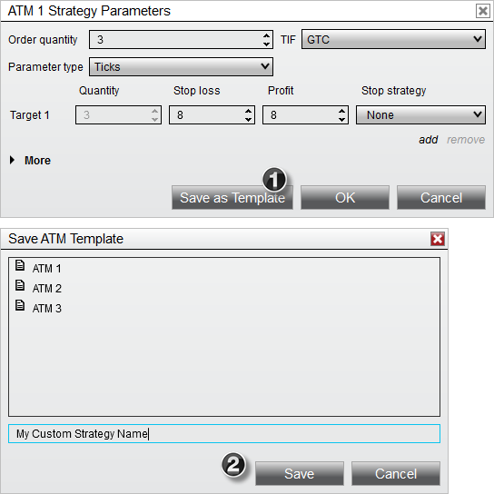
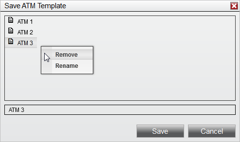

|
<< Click to Display Table of Contents >> Manage ATM Strategy Templates |


|
Manage ATM Strategy Templates
|
<< Click to Display Table of Contents >> Manage ATM Strategy Templates |
|
An ATM Strategy is defined by the parameters you enter into the ATM Strategy parameters section on any of the order entry screens. The collection of parameters that make up a strategy can be saved as a template that you can recall at a later date to automatically populate all of the ATM Strategy parameters.
1.Select the Save as Template button
2.From the presented file dialog give the template a custom name

Right clicking on an existing ATM Strategy template will give you the option to either Remove or Rename the strategy template.

See ATM Strategy Example #1 and ATM Strategy Example #2 for further reference on how to create and save an ATM Strategy template.